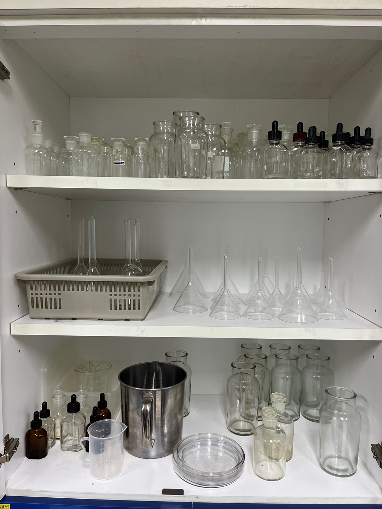
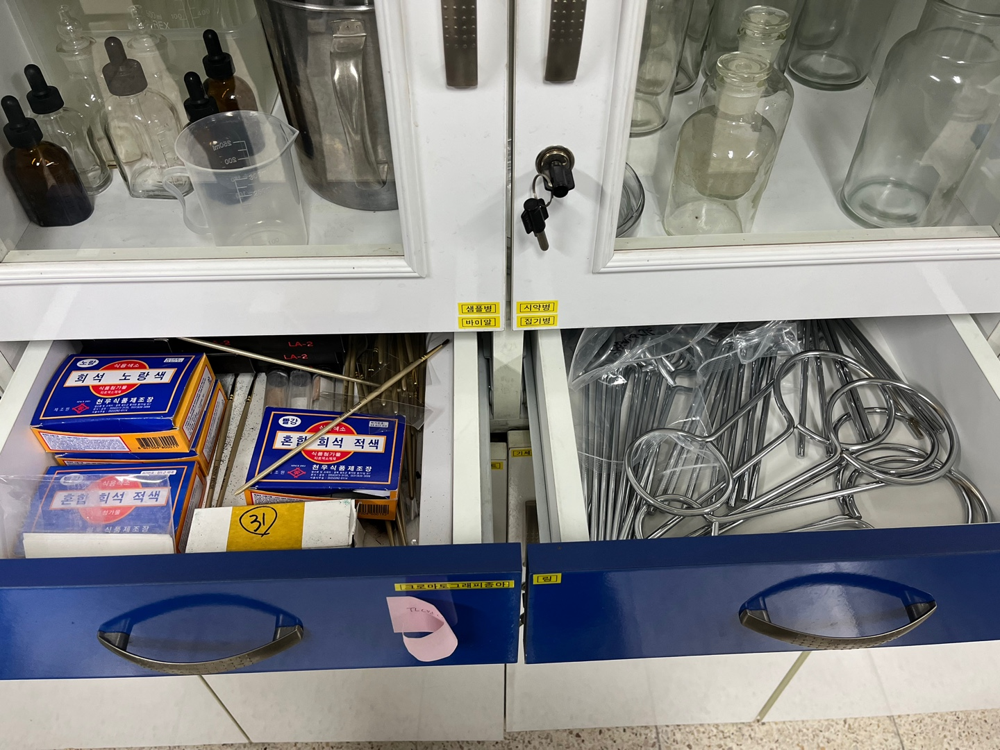
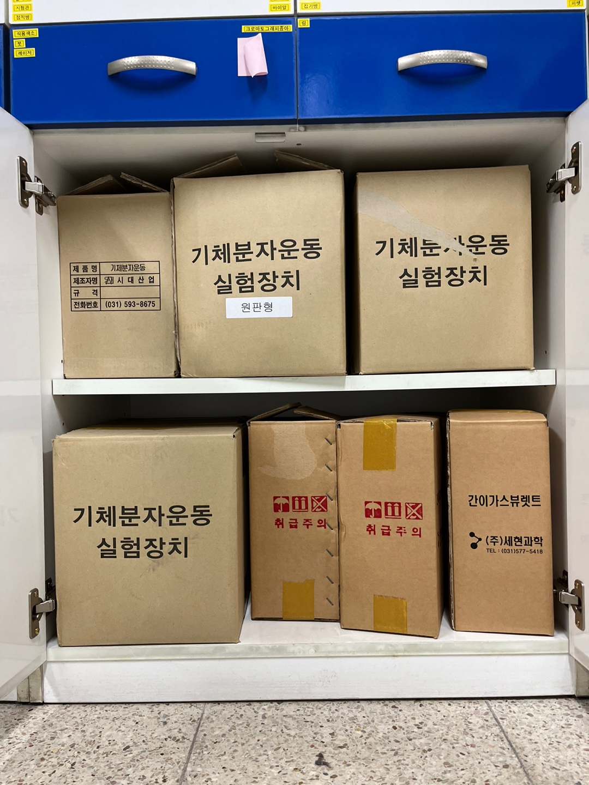

<3번 서랍
윗서랍

첫번 째 칸 & 세번 째
점적병 - 약물이나 액즙 따위의 분량을 한 방울씩 떨어뜨려서 헤아리는 기구.
샘플병 - 샘플병
바이알 - 유리나 플라스틱으로 만들어진 작은 병으로써 액상으로된 의약품 및 파우더, 알약등을 보관하는 병이다
시약병 - 화학반응에 사용되는 모든 약품인 시약을 담아두는 병
집기병 - 기체를 모으는 유리로 된 병. 공기보다 무거운 기체를 모을 때는 집기병을 똑바로 세워서 모으고, 공기보다 가벼운 기체를 모을 때는 집기병을 거꾸로 세워서 모은
두번 째 칸
깔대기 - 한 용기에서 다른 용기로 물질을 옮길 때 주로 쓰인다.
시험관 - 시험관은 실험실에서 다양한 용도로 활용되는 길다란 유리 관이다. 비커와 용도가 비슷하다

첫번 째 칸
식용색소 - 음식물에 빛깔을 들이는 데 쓰이는 무해의 색소
붓– 붓 (초파리 구분이나 작은 가루 분류등에 사용)
크로마토 그래피 종 - 적절한 정지상과 이동상을 사용하여 시료들이 섞여 있는 혼합물을 이동속도 차이를 이용하여 분리하는 방법이다
두번 째 칸
링– 화학실험 스탠드 세트의 일부

간이가스 뷰렛트- 기체의 체적변화 흐름을 측정하는 간이 상자형 가스 뷰렛트기체가 발생 또는 흡수되는 화학반응 실험을 할 때 기체의 변화 측정을 실시간으로 간단하게 할 수 있다
기체 분자 운동 실험장기체 분자 운동 실험장치 - 분자운동 모델을 구의운동을 이용하여 물질의 상태변화, 기체의 분자운동, 확산과 팽창, 침투, 투석, 보일의 법치 등을 표현할 수 있는 제품으로 투시환등기로도 사용가능